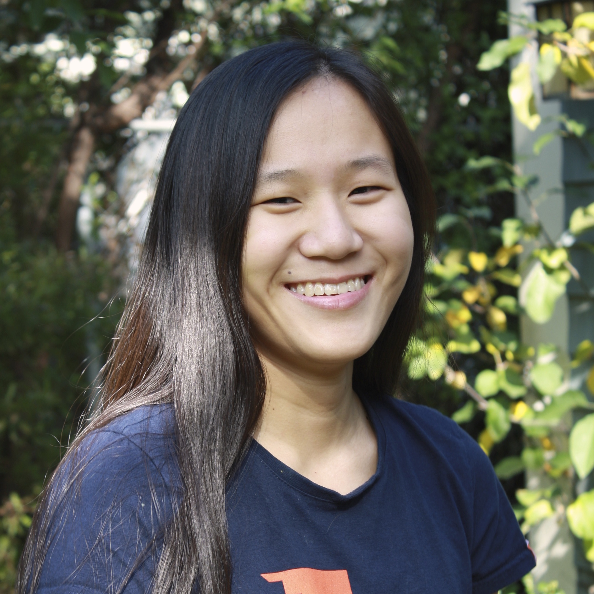
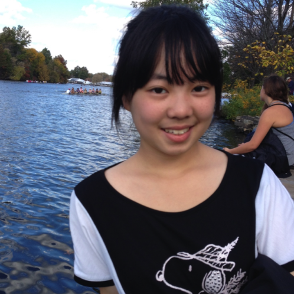

About |
Sudo Hoot was founded in spring 2014 by three first-year CS majors at Bryn Mawr College. It is Bryn Mawr's all-inclusive club for hackers, coders, makers, artists, writers, entrepreneurs, and everyone in between! We want to bring awareness of opportunities in computer science and other technical fields to Mawrters, and learn about opportunities in the tech industry while preserving our identities as liberal arts students.
Questions? Comments? Contact us!

Calla Carter
President
|

Rachel Xu
Secretary
|
Mimi Benkoussa
Treasurer
|
Events |
Jobs |
Contact |
Email us with any questions, comments, or concerns (or just say hi!) at contact@sudohoot.com.
Sudo Hoot is Bryn Mawr College's student designer and developer organization. We are committed to building a student tech culture that is open to students from all backgrounds, interests, and experience levels. To do that, we rely on resources to fund trips to local workshops and relevant events, conference registration to events like the Philly Women in Tech Summit and the Grace Hopper Celebration for Women in Computing, workshops we hold oncampus to introduce local K-12 girls to technology, purchase food for club meetings oncampus, and much more.
Contributions in any form - including swag to give out in meetings, food, and more - are greatly appreciated.
Sponsors |